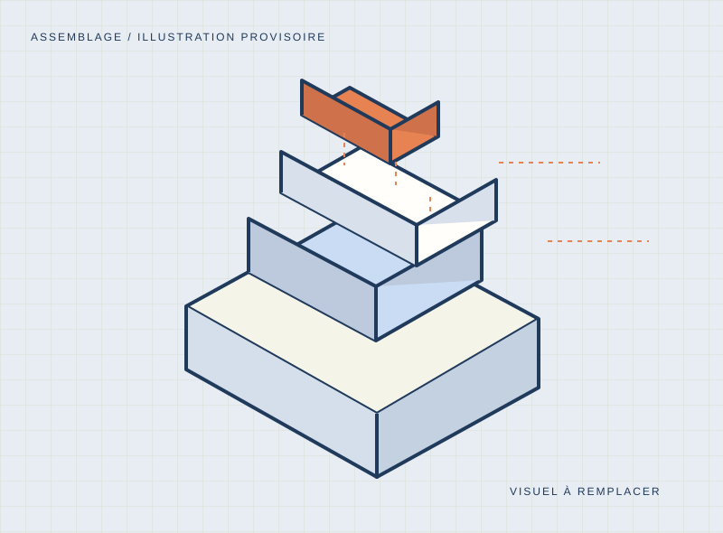
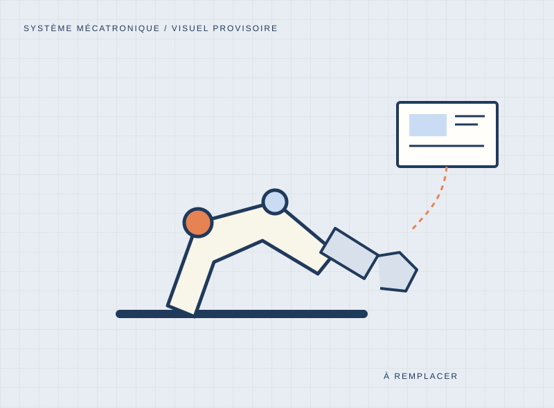

PROJET / [ANNÉE]
[Titre du projet]
[Une phrase pour résumer le besoin auquel répond le projet et votre contribution personnelle.]

01 / Le besoin
Contexte du projet
[Expliquez le contexte de départ, les utilisateurs concernés et le besoin à satisfaire. Précisez les contraintes fonctionnelles, dimensionnelles, économiques ou calendaires réellement rencontrées.]
02 / La démarche
Conception & choix techniques
[Décrivez les pistes étudiées, vos critères de décision et la solution retenue. Détaillez votre contribution en conception mécanique, intégration mécatronique ou dimensionnement, sans attribuer à votre travail les tâches d’autres personnes.]

Une décision à expliquer
[Présentez un choix technique précis : alternatives envisagées, compromis, hypothèses et raison du choix final.]
03 / Le bilan
Résultats & enseignements
[Rapportez des résultats vérifiables : prototype réalisé, essais effectués, critères mesurés ou livrables produits. Indiquez clairement ce qui reste à faire et ce que vous avez appris.]
Résultat clé
[Ajoutez un résultat quantifié uniquement si vous disposez de la mesure et pouvez en expliquer la méthode.]